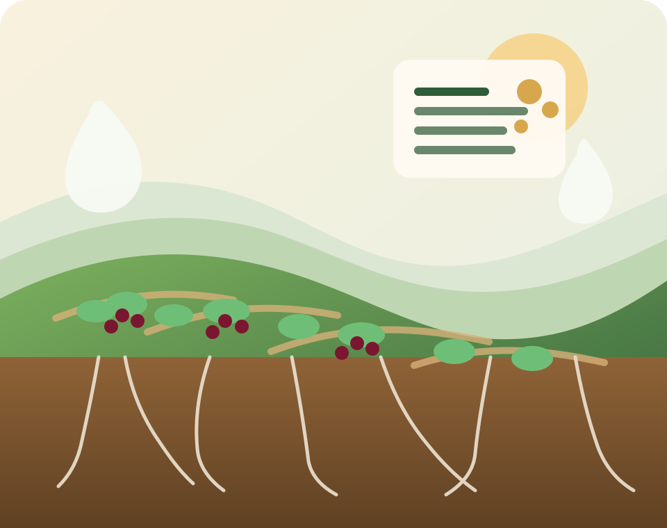

Chi è
Dottore Agronomo iscritto all'Ordine dei Dottori Agronomi e Forestali di Milano, n. 1530.
Piccoli frutti · fertilizzazione sostenibile · mezzi tecnici biologici
Michele Ghezzi segue aziende agricole e operatori del verde con consulenza su colture specializzate, fertilizzazione sostenibile, mezzi tecnici biologici e naturali, suolo, acqua, nuovi impianti e sistemi fuori suolo.

Sintesi
Dottore Agronomo iscritto all'Ordine dei Dottori Agronomi e Forestali di Milano, n. 1530.
Aziende con canapa, ortaggi convenzionali e biologici, quarta gamma, aromatiche, cereali e oleaginose, zootecnia, vivai e giardinieri.
Prima si analizza il contesto aziendale, poi si costruiscono protocolli e piani di fertilizzazione mirati per coltura.
Focus tecnico
Il lavoro si concentra in modo particolare su mirtillo, lampone, mora, ribes e uva spina, con protocolli adattabili a piena terra, vaso, sacco e sistemi fuori suolo. Il supporto può riguardare anche fragola fuori suolo e nuovi impianti, in collaborazione con altri colleghi.
Pubblicazione
Il volume firmato con Nicola Noè raccoglie esperienze in impianti del Nord Italia, con attenzione a specie, areali, sostanza organica, pratiche sostenibili e microrganismi utili.
Interventi tecnici
Richiesta di consulenza
Per un primo contatto sono già utili coltura, area, impianto, obiettivo e problema da affrontare.